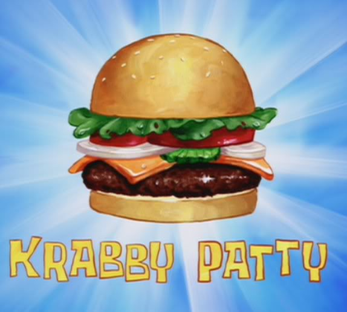

Krabby Patty Recipe

Description
Don't tell Plankton, but as any astute watcher of Spongebob Squarepants knows, Krabby Patties aren't actually made with crab. Or even "krab." They're made out of chum, leftover scraps, making Krabby Patties the hot dogs of the sea. I'm going to show you how to make a gourmet Krabby Patty, and it doesn't contain any crab, either. Nope. It's all shrimp. And it came out even better than I expected.
Why shrimp? I've learned from many attempts at making Krabby Patties that making them with crab is a waste of good crab. You fry it up in hot oil in a pan and you lose a lot of crab flavor. Plus, it's beaucoup expensive. You may end up adding tons of breadcrumbs to stretch the recipe to feed more than one person, and then it ends up tasting more like breadcrumbs than crab. I've experimented with this recipe over the years. At one point, I started adding shrimp to bind it together and to stretch the crab. I kept adding more shrimp each time I made this until I recently came to the conclusion that it should just be all shrimp. Tastier, yet less expensive.Of course, if you prefer crab, use crab. A mixture of both is a wonderful compromise.
Ingredients
- 1 1/3 lb. ground beef (80 percent lean)
- 2 tsp. Old Bay seasoning
- 1 tsp. Black pepper
- 1 tsp. Sea salt
- 4 slices cheddar cheese
- 1/2 cup mayonnaise
- 1 tsp. Old Bay seasoning
- 4 sesame seed buns, sliced in half
- ketchup
- mustard
- 1 jar dill pickle slices
- 1 red onion, sliced
- 1 tomato, sliced
- 4 leaves of butter lettuce
Steps
- Make the Burger Patties: Heat a grill pan or sauté pan over medium heat. As it heats, combine ground beef, Old Bay, pepper and salt. Form into four equally sized patties, about 1/3 lb apiece. Set on a platter next to the stovetop. Coat the warmed grill pan with cooking spray and place patties on the pan, cooking each side about 4-5 minutes, or until cooked through to your desired doneness.
- Use a large star-shaped cookie cutter to cut each cheese slice into a star shape. Place the star-shaped cheese on each burger patty, in the last 30 seconds or so of cooking, so it melts a little. Set burger patties aside.
- Make King Neptune’s Poseidon Powder Aioli: Stir mayo and Old Bay until thoroughly combined.
- IAssemble the Sandwich: Spread Poseidon Powder Aioli on the bottom of each bun. Top with a burger patty, ketchup, mustard, pickles, onion slices, tomato and lettuce. Place the top bun on each burger. Serve.
Back Home